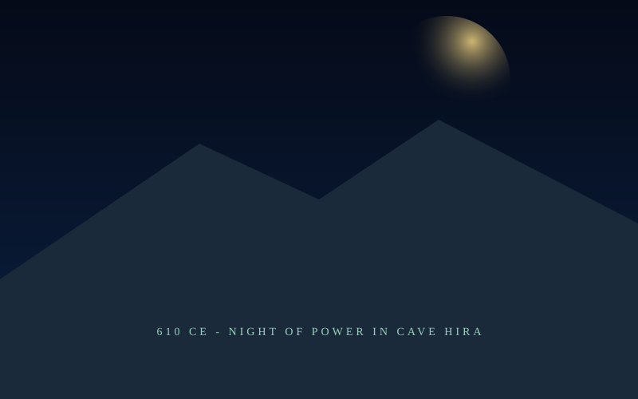
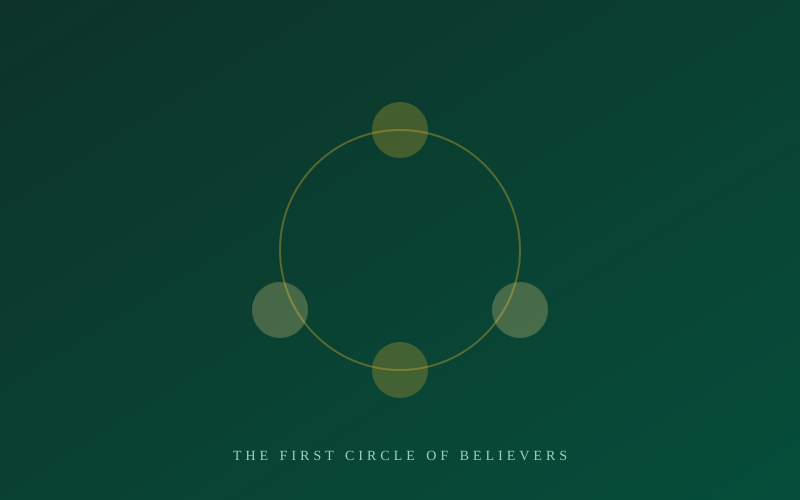
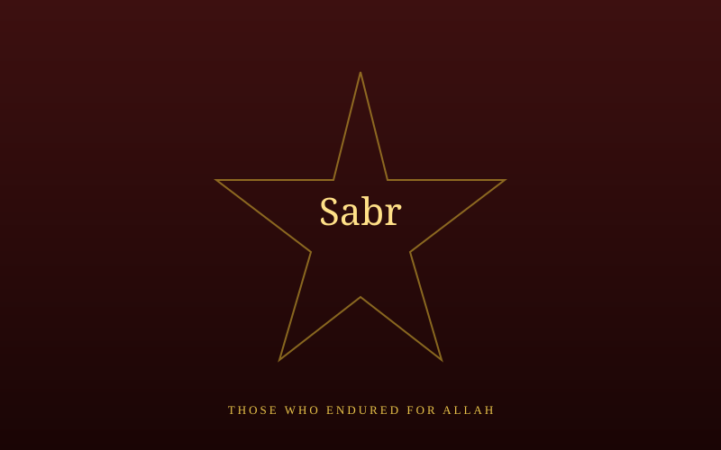
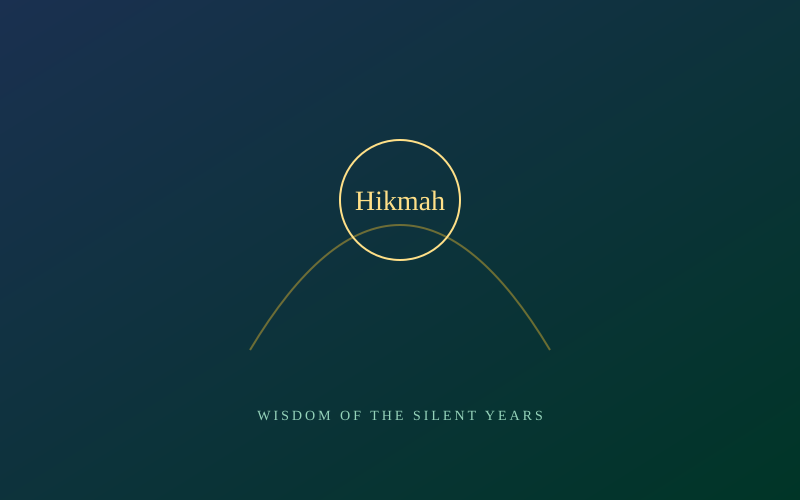
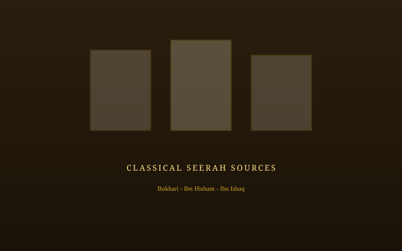
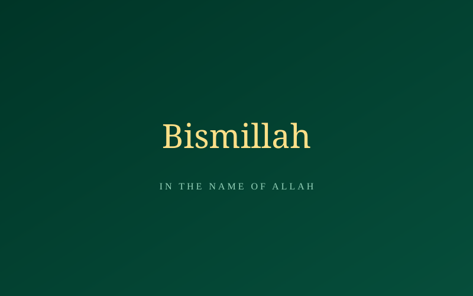
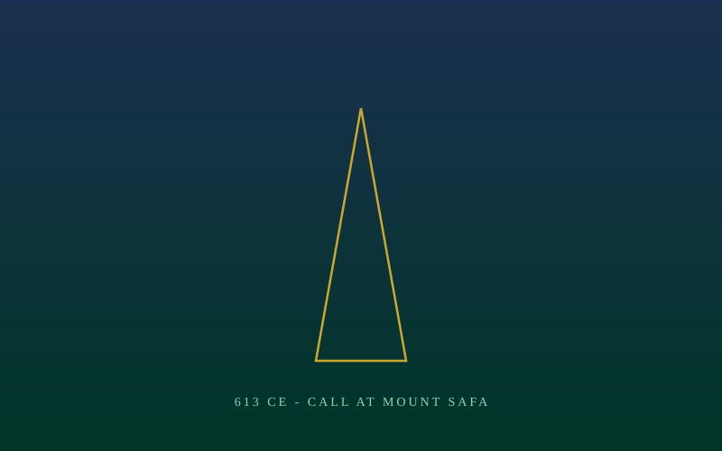

The Silent Dawn
"Read! In the name of your Lord who created." — Three quiet years in which a handful of hearts in Makkah received a message that would change the world, long before the world was told.
From Cave to Call
Explore the Secret Years
Every chapter of this archive is its own room — open any door below.

Chronicles of the Secret Da'wah
From the first light in Cave Hira to the command to proclaim openly at Safa — the full timeline of 610–613 CE.

The Pioneers of Faith
Khadija, Abu Bakr, Ali, Zaid, and the first circle of believers who answered the call when it was most perilous.

Trials & Sacrifice
The weak and the enslaved among the believers — Bilal, Sumayyah, Yasir, Ammar, Khabbab — and the price they paid.
The House of Knowledge
At the foot of Mount Safa, the home of Al-Arqam became Islam's first school, sanctuary, and gathering place.

Wisdom of the Silent Years
Patience, discretion, and solidarity — timeless lessons drawn from the Prophet's ﷺ strategy of secrecy.

Historical Sources
The classical works this archive draws from — Sahih Bukhari, Ibn Hisham, and the early biographers of the Prophet ﷺ.
The Seerah Map
An interactive map of Makkah with the key locations of this era — Cave Hira, Dar al-Arqam, the Ka'bah, and Mount Safa — each with GPS-accurate pins you can click to explore.

Du'as of Patience & Steadfastness
Authentic prophetic supplications whose themes of patience, steadfastness, and trust in Allah mirror the spirit of the secret Da'wah era — with Arabic text, transliteration, and source citations.
Three Years, Three Turning Points
A glimpse of the road from a single cave to a public call heard across Makkah.
The First Revelation
In the solitude of Cave Hira, the Angel Jibril brings the first verses. The Prophet ﷺ returns trembling to Khadija (RA), who wraps him in comfort and certainty.
Invitation in Private
House to house, friend to friend, the message moves through bonds of trust — forming a small, unbreakable core of believers.

The Call at Safa
After three years of quiet gathering, the command comes to "proclaim what you are commanded" — the secret era ends.
The Pioneers of Faith
The first individuals to recognise the truth, offering their loyalty when it was most perilous.

The Price the Weak Paid
Not every believer had a powerful clan to shield them. Slaves and the poor among the early Muslims — Bilal, Sumayyah, Yasir, Ammar, and Khabbab — bore the open cruelty of Makkah's elite simply for saying "My Lord is Allah."
"Patience, O family of Yasir, for your appointed place is Paradise." — The Prophet ﷺ, to Yasir's family under tortureRead Their Stories
Did You Know?
Three Years in Secret
For three full years, Islam grew without a single public sermon — only whispered invitations between trusted hearts.
Dar al-Arqam
The Prophet ﷺ taught the Qur'an in a young companion's house at Mount Safa — Islam's first madrasah, hidden in plain sight.
First Martyr
Sumayyah bint Khayyat (RA) was the first person to give her life for Islam — before any battle was ever fought.